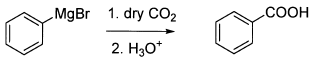
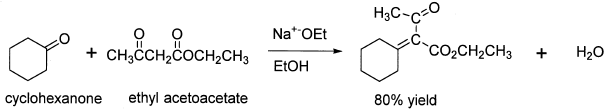
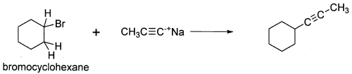
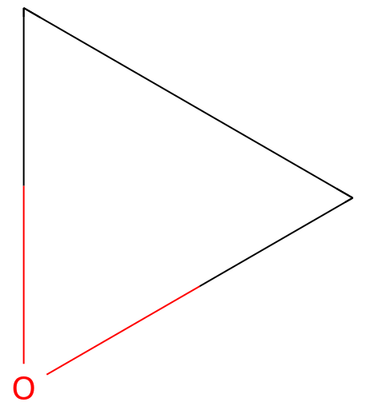

令和5年度 問1 有機化学及び燃料
カルバニオンを用いた有機反応に関する次の記述のうち、誤っているものはどれか。
①
臭化フェニルマグネシウムのエーテル溶液に乾燥したCO2を通し、H3O+で処理することによって安息香酸が生成する。

②
Grignard試薬にエステルを作用させると第三級アルコールを与えるが、ヒドロキシル基をもつ炭素に結合している置換基のうちの二つはGrignard試薬に由来する。
③
異なったカルボニル化合物間のアルドール反応を行う場合、シクロヘキサノンのようにα水素をもたないものと、アセト酢酸エチルのように普通以上に求核性供与体との反応では、生成物が混合物になることもなく混合アルドール反応が望むように進行する。

④
エチレンオキシドとGrignard試薬の反応では、出発物のハロゲン化アルキルより2炭素多い第一アルコールに変更することができる。
⑤
アセチリドアニオンのアルキル化

正答
⑤ アセチリドアニオンのアルキル化
アセチリドアニオンは炭素上に負電荷を持つため強い求核性があります。そのため、第一級ハロゲン化アルキルとアセチリドアニオンは、SN2反応でハロゲンがアセチリドに置換します。ただし、5番のような第二級ハロゲン化アルキルの場合では立体障害のためSN2反応が起こりづらくなります。代わりにアセチリドアニオンの（C-H 結合から H+を引き抜けるレベルの）塩基性の強さに起因した水素のE2脱離反応が起こります。
1番はカルボニルに結合する分子が酸素であることからイメージしづらいかもしれませんが、通常のグリニャール試薬の反応機構を書くことで理解できます。
2番のエステルとグリニャール試薬の反応は、１モルのエステルに対し２モルのグリニャール試薬が反応します。1回目のグリニャール反応でカルボニル基は維持したまま脱離基であるアルコキシ基が脱離します。2回目のグリニャール反応でカルボニル部分がアルコールに変化します。そのためヒドロキシ基をもつ炭素に結合している置換基には2回分のグリニャール反応を経た置換基が結合しています。
4番のエチレンオキシドは環状エーテル分子です。特に3員環のエーテルを持つ分子はエポキシドと分類され、3員環ならではのひずみ構造により反応性が高いことが知られています。エチレンオキシドは炭素原子を2つ持つため、グリニャール反応後は出発物のハロゲン化アルキルより2炭素多い第一級アルコールが生成します。

なお、3番には「シクロヘキサノンのようにα水素をもたない」との記載がありますが、実際はα水素をもちます。